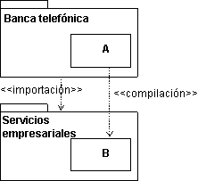
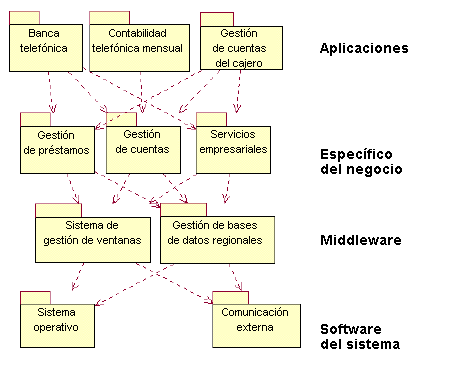

Explicación
Manejar las dependencias entre subsistemas es un aspecto importante de la estructuración de un modelo de
implementación. Un elemento en un subsistema cliente sólo puede compilar contra elementos de un subsistema proveedor,
si el subsistema cliente importa el subsistema proveedor. Para expresar tales dependencias, utilice la dependencia de
importación de un subsistema a otro, para indicar el subsistema en el que existe una dependencia.
Ejemplo:
El diagrama de componentes siguiente ilustra las dependencias de importación entre subsistemas de implementación.

El subsistema Banca telefónica tiene una dependencia de importación con el subsistema Servicios empresariales,
permitiendo que los elementos de Banca telefónica compilen contra elementos públicos (visibles) en Servicios
empresariales.
Utilización
Una utilización importante de la dependencia de importación es controlar la visibilidad entre subsistemas, y reforzar
una arquitectura en los implementadores. Cuando el arquitecto de software define la dependencia de importación en un
punto temprano del desarrollo, los implementadores sólo pueden permitir que sus elementos de implementación hagan
referencia (compilen contra) elementos públicos de los subsistemas de importación. El control de la importación ayuda a
mantener la arquitectura de software y evita dependencias no deseadas.
Los subsistemas se pueden organizar en capas
El modelo de implementación se organiza normalmente en capas. El número de capas no es fijo, sino que varía de
situación en situación. A continuación, se muestra una arquitectura típica con cuatro capas:
-
La capa superior, capa de la aplicación, contiene los servicios específicos de la aplicación.
-
La capa siguiente, capa específica de negocios, contiene componentes empresariales específicos, que se
utilizan en varias aplicaciones.
-
La capa de middleware contiene componentes como constructores de GUI, interfaces de sistemas de gestión de
bases de datos, servicios de sistemas operativos independientes de la plataforma y componentes OLE, como editores
de diagramas y hojas de cálculo.
-
La capa inferior, capa de software del sistema, contiene componentes como sistemas operativos, interfaces de
hardware específico, etc.

Un ejemplo de un modelo de implementación por capas para un sistema bancario. Las flechas muestran las dependencias de
importación entre subsistemas.
|